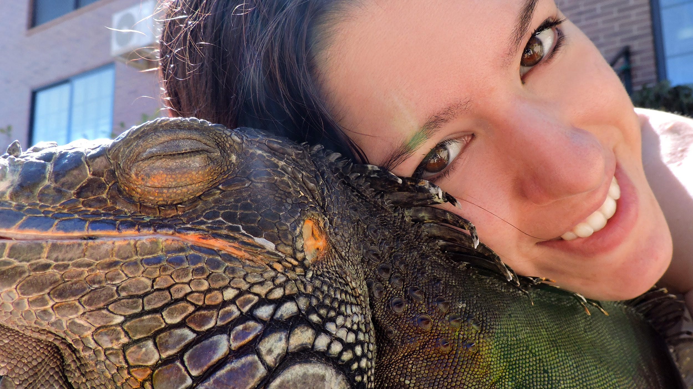

¿LO BÁSICO PARA EMPEZAR CON UNA IGUANA?
Visita mi canal de YouTube
RESPONDIENDO A DUDAS:
(Un saludo guapa, gracias por tu comentario y la siguiente frase no va por ti, eso va por otros 😒)
A veces me tomo un buen tiempo en responder un comentario, por eso no seáis tan exigentes algunos....
*Hola 😊. (Ahora entenderás porque me he tomado mi tiempo en responder) En principio necesitas
una bombilla que emita UVB (no confundir con los uva), hay distintos formatos: fluorescente, bombilla o bombilla
solar HID. La mejor es la última que además emite también calor, tiene mayor alcance y aguante. Todas con el paso
del tiempo emiten menos uvb hasta que ya no les queda, siguen iluminando pero ya no emiten uvb que es lo importante
así que las tienes que cambiar entre 1 o 2 veces al año, dependiendo del uso. La diferencia entre ellas, es que te
las he puesto en orden de eficacia, de menos a mayor, el fluorescente en un mes casi ya no tiene alcance. Estás
bombillas las tienes que poner cerca del animal, donde vaya a asolearse. Intenta que no esté a más de 20 o 30 cm de
distancia de una rama o balda o cualquier montículo donde vaya a asolearse tu iguana. El terrario de una iguana tiene
que ser más alto que largo. Por eso no te pongo de referencia el suelo. También necesitarás una bombilla calefactora
(a no ser que pongas la bombilla solar HID que te mencioné antes y sea suficiente con el calor que da, que suele ser
así. Para comprobar lo que necesitas tanto de watios como de bombillas tendrás que utilizar un termómetro) Por el día
tienes que conseguir que la zona cálida del terrario esté en torno a los 33 grados, es decir que esté entre 30 y 35.
Está zona la tienes que crear donde enfoquen las bombillas uvb (la zona alta). La zona fría puede bajar de temperatura
pero estaría bien que no bajara de los 26 grados (zona baja). Por la noche debe bajar la temperatura a unos 22-25
grados centígrados.
Depende de cómo hagas el terrario, puede que el calor que generes por el día lo puedas conservar
por la noche sin poner ninguna bombilla. Bajará de forma gradual pero sin llegar a disminuir de los 22 grados en
toda la noche hasta que vuelvan a encenderse las bombillas diurnas. Pero si no fuera el caso tendrás que usar una
bombilla calefactora también por la noche pero, o menos horas o menos watios y siempre una que no moleste a su
descanso. Sobre las bombillas calefactoras hay varios modelos también: luz blanca, infrarroja uva, nocturna o de
cerámica. Debes probar cuántos watios te harán falta, empieza de poco a mucho con 40 o 60 watios y si no es
suficiente más (100 watios)
Sobre la humedad. Debes mantenerla sobre el 80% (necesitas un higrómetro). Para mantenerla antes
tendrás que pulverizar a cada rato o colocar un sistema e lluvia automático. Y darle baños largos de agua tibia le
viene muy bien a su piel 😊. Los troncos que pongas no pueden ser resinosos porque son tóxicos y antes de meterlos
debes desinfectarlos. Te recomiendo usar temporizadores para las luces y si quieres un termostato para los bombillas
calefactoras. No sé si me dejaré algo. Cuídala mucho mucho. Besos 😘💕🐲🔝 Mucho amor reptilero creciente ❕*
